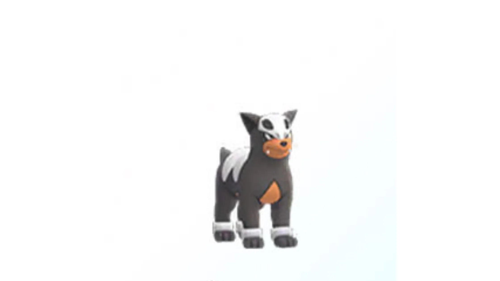
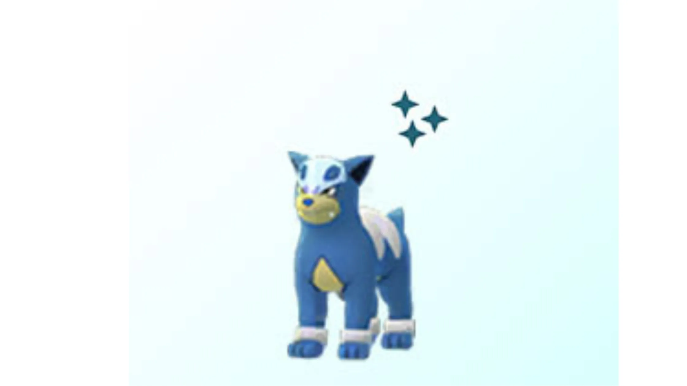
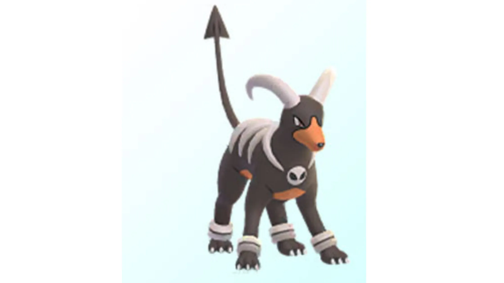
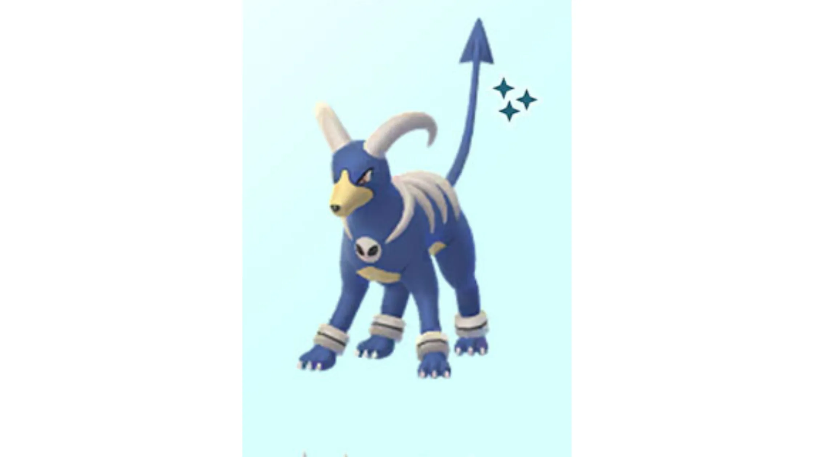
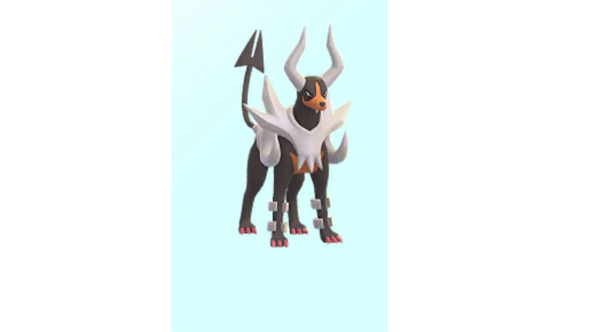
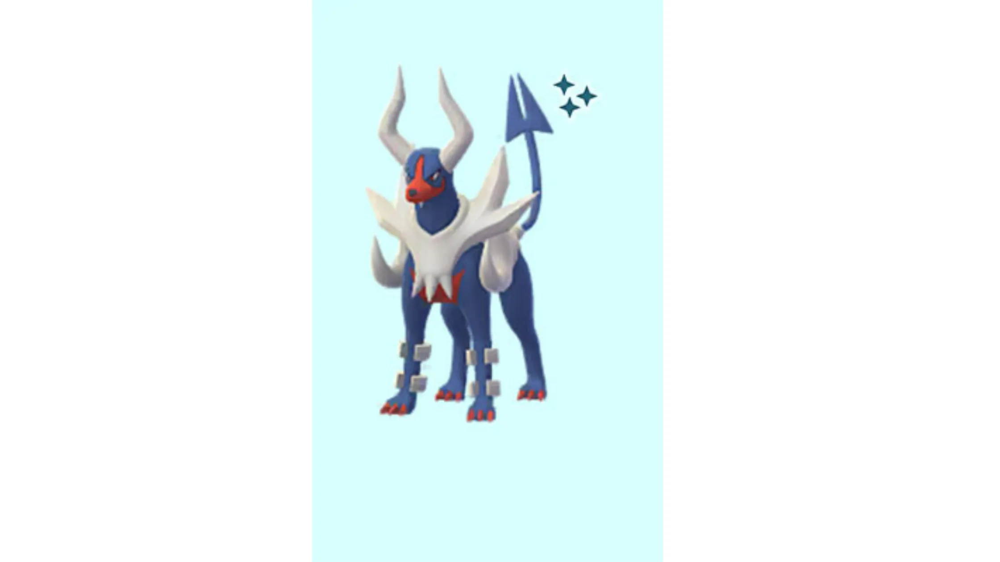

📖 Introduction
The Mega Evolution of Houndoom, Mega Houndoom is one of the most aggressive Fire-type Mega Pokémon in Pokémon GO raids. With extremely high offensive power, it can quickly knock out unprepared raid teams using strong moves like Fire Fang, Foul Play, and Flamethrower.
Because Mega Houndoom is a dual Fire and Dark-type Pokémon, it has several important weaknesses that players can exploit during raids. Strong Rock, Water, Ground, and Fighting-type attackers can deal significant damage and help trainers defeat this Mega Raid Boss quickly.
Mega Houndoom is useful because:
- It is one of the fastest Fire-type Mega Pokémon
- It deals excellent damage against Grass, Bug, Ice, and Psychic-type bosses
- It boosts Fire and Dark-type attackers in raids
This guide will help you prepare for the Mega Houndoom raid by explaining its weaknesses, the best Pokémon counters to use, catch CP ranges, weather effects, and recommended raid strategies. Whether you are raiding with a large group or a small team of experienced trainers, understanding these mechanics will make the battle much easier.
💡 Expert Insight
Mega Houndoom is an offensive-heavy raid boss with strong Dark and Fire-type moves, making it dangerous if left unchecked. However, its multiple weaknesses to Fighting, Ground, Rock, and Water types give players flexibility in team building.
Trainers should prioritize survivability alongside damage, as Mega Houndoom can quickly knock out glass-cannon attackers. Balanced teams often perform better than purely offensive ones in this raid.
📊 Mega Houndoom Stats
| Type |  Dark / Dark /  Fire Fire |
| Max CP (Houndoom) | 4565 |
| Weather Boost | Sunny, Foggy |
| Shiny | Yes |
| Base Attack | 289 |
| Base Defense | 194 |
| Base Stamina | 181 |
Mega Houndoom focuses heavily on offense. Its high attack stat allows it to deal massive Fire and Dark-type damage during raids.
What Makes Mega Houndoom Tough?
Mega Houndoom deals considerable damage with its powerful Fire- and Dark-type moves such as Fire Blast, Flamethrower, Crunch, and Foul Play. Trainers who ignore type advantages may struggle against its high attack stat.
🎯 Catch CP & 100% IV
After defeating Mega Houndoom, you will catch a normal Houndoom.
CP Range:
- No Weather Boost: 2,106-2,195 CP
- Weather Boost: 2,633-2,744 CP
100% IV:
- 2195 (Normal)
- 2744 (Weather Boosted)
If you encounter a Mega Houndoom within these CP ranges after defeating the raid boss, it indicates the Pokémon has good IV potential.
⚠️ Mega Houndoom Weaknesses
Mega Houndoom is a Dark and Fire-type Pokémon. This typing combination creates multiple weaknesses that trainers can exploit in raids.
| Category | Details |
|---|---|
| ❌ Weak To: |
 Fighting • Fighting •
 Water • Water •
 Ground • Ground •
 Rock Rock
|
| ✅ Resistant / Immune To: |
 Ghost • Ghost •
 Steel •
Fire • Steel •
Fire •
 Grass • Grass •
 Psychic • Psychic •
 Ice •
Dark Ice •
Dark
|
Notes: Use Water, Rock, Ground, or Fighting-type Pokémon to deal strong super-effective damage.
Why Rock-Type Counters Are Superior
Many players assume Water or Fighting types are best. While they are effective, Rock-types are highly effective due to strong super-effective damage against Fire typing.
A properly powered Rock attacker can reduce raid time by 20–30% compared to average Fighting counters.
🗡️ Best Counters for Mega Houndoom
The best way to defeat Mega Houndoom is to use strong Rock-type, Water-type, Ground-type and Fighting-type Pokémon.
💧 Water-type Counters
- Primal Kyogre (Waterfall + Origin Pulse)
- Swampert (Water Gun + Hydro Cannon)
Water-types work well, especially in Rainy weather.
Water-types are effective against Fire typing, but may take neutral damage from Dark moves.
🥊 Fighting-type Counters
- Mega Lucario (Counter + Aura Sphere)
- Conkeldurr (Counter + Dynamic Punch)
- Hariyama (Counter + Dynamic Punch)
Lucario performs very well in this raid due to its powerful Fighting-type moves.
Conkeldurr is another excellent Fighting-type attacker.
Fighting-types deal strong super-effective damage and are not weak to Dark moves, making them the safest primary counter.
🌍 Ground-Type Counters
- Garchomp (Mud Shot + Earth Power)
Garchomp’s Ground-type moves such as Mud Shot and Earth Power make it an effective counter against Mega Houndoom.
Ground-types deal consistent damage and resist Fire-type attacks.
🪨 Best Rock-type Counters
- Tyranitar (Smack Down + Stone Edge)
- Rampardos (Smack Down + Rock Slide)
- Rhyperior (Smack Down + Rock Wrecker)
Mega Tyranitar is the strongest overall counter. It benefits from Rock STAB and boosts other Rock-types in your party.
Rampardos is a glass cannon. It delivers extremely high damage but faints quickly. Best used in coordinated duos.
Rhyperior provides balanced bulk and strong Rock damage.
Rock-type Pokémon are particularly effective because they deal consistent high damage against Mega Houndoom’s Fire typing while maintaining strong DPS in most weather conditions.
Raid Preparation Checklist
- Power up Water, Rock or Fighting Pokémon
- Bring enough Revives and Potions
- Use a Mega Evolution for team boosts
- Join with at least 3 trainers
- Use Golden Razz Berries when catching
🏆 Best Regular Counters
Find the best counters for defeating Mega Houndoom in Pokémon GO. Here are the top 30 Mega Houndoom counters, including moves.
| Pokémon | 🗡️ Fast Moves | 💥 Charged Moves | 🔄 Elite Moves | 🏆 Best Moves | 🧪 Why This Counter Works |
|---|---|---|---|---|---|
| Primal Kyogre | Waterfall | Hydro Pump / Surf / Thunder / Blizzard / Avalanche | Origin Pulse | Waterfall and Hydro Pump | As a pure Water-type attacker, it hits Mega Houndoom’s Fire typing for super-effective damage, and its extremely high Attack stat allows it to deal massive DPS throughout the raid. |
| Blaziken | Ember / Counter / Fire Spin | Focus Blast / Brave Bird / Overheat / Blaze Kick / Aura Sphere | Blast Burn / Stone Edge | Counter / Fire Spin and Overheat | Counter provides strong super-effective Fighting damage against Dark typing, while Overheat adds Fire coverage with high burst damage. |
| Terrakion | Double Kick / Smack Down / Zen Headbutt | Close Combat / Earthquake / Rock Slide | Sacred Sword | Smack Down and Earthquake | Its Fighting and Rock coverage both hit Mega Houndoom’s weaknesses, and Terrakion’s high Attack stat ensures fast clear times. |
| Keldeo(Resolute) | Low Kick / Poison Jab | Close Combat / Sacred Sword / X-Scissor / Aqua Jet / Hydro Pump | None | Poison Jab and Hydro Pump | Water and Fighting-type moves both exploit Mega Houndoom’s weaknesses, making it a flexible dual-coverage attacker. |
| Shadow Tyranitar | Iron Tail / Dragon Breath / Bite | Stone Edge / Fire Blast / Crunch / Brutal Swing | Smack Down | Smack Down and Stone Edge | The Shadow damage bonus increases its Rock-type DPS, allowing it to hit Mega Houndoom’s Fire typing for strong super-effective damage. |
| Shadow Groudon | Mud Shot / Dragon Tail | Earthquake / Fire Blast / Solar Beam | Precipice Blades / Fire Punch | Dragon Tail and Solar Beam | Shadow boost combined with powerful Ground-type attacks delivers extremely high super-effective damage. |
| Shadow Blaziken | Counter / Fire Spin / Ember | Focus Blast / Aura Sphere / Brave Bird / Overheat / Blaze Kick | Stone Edge / Blast Burn | Counter / Fire Spin and Overheat | Counter deals super-effective Fighting damage, and the Shadow boost significantly increases total DPS output. |
| Shadow Kyogre | Waterfall | Hydro Pump / Surf / Thunder / Blizzard / Avalanche | Origin Pulse | Waterfall and Hydro Pump | Waterfall and Hydro Pump hit Fire typing hard, and the Shadow boost makes it one of the highest Water-type DPS options. |
| Mega Tyranitar | Iron Tail / Dragon Breath / Bite | Stone Edge / Fire Blast / Crunch / Brutal Swing | Smack Down | Smack Down and Stone Edge | Provides strong Rock-type damage against Fire typing while boosting Rock-type teammates in the raid. |
| Mega Latios | Zen Headbutt / Dragon Breath | Aura Sphere / Solar Beam / Psychic / Dragon Claw | Luster Purge | Zen Headbutt and Solar Beam | High Attack stat allows strong neutral Dragon damage, while providing team-wide Dragon boost. |
| Mega Aerodactyl | Rock Throw / Steel Wing / Dragon Breath / Bite | Hyper Beam / Earth Power / Ancient Power / Rock Slide / Iron Head | None | Rock Throw and Rock Slide | Rock Throw and Rock Slide hit Fire typing super-effectively and boost Rock-type teammates. |
| Mega Gyarados | Waterfall / Dragon Breath / Bite | Hydro Pump / Outrage / Twister / Crunch | Dragon Tail / Aqua Tail / Dragon Pulse | Dragon Tail and Hydro Pump | Water-type moves deal super-effective damage against Fire typing and boost Water-type attackers. |
Solo / Duo Guide
| Players | Difficulty |
|---|---|
| Solo | Impossible |
| Duo | Very Hard |
| 3 Players | Moderate |
| 4–5 Players | Easy |
Most groups of three to five trainers should be able to defeat Mega Houndoom comfortably.
These counters consistently rank among the best due to damage output and how well their moves exploit Mega Houndoom’s weaknesses.
🧩 Best Team Compositions
Strong Team (3–5 Trainers)
- Primal Kyogre — heavy Water DPS (Waterfall + Origin Pulse)
- Primal Groudon — strong Ground DPS (Mud Shot + Precipice Blades)
- Mega Lucario — high Fighting DPS
- Mega Swampert — Water support (Water Gun + Hydro Cannon)
- Terrakion — Fighting/Rock utility (Double Kick + Sacred Sword)
Alternate Team (Balanced)
- Primal Kyogre (Waterfall + Origin Pulse)
- Shadow Kyogre (Waterfall + Surf)
- Mega Garchomp - Ground-type damage
Even with less optimal counters, having a mix of Water, Ground, Rock, and Fighting attacks will steadily take down Mega Houndoom.
🧠 Best Strategy to Defeat Mega Houndoom
1. Prioritize Fighting Damage
Focus on high-DPS Fighting Pokémon for the fastest clear time.
2. Avoid Psychic-Type Attackers
Mega Houndoom resists Psychic moves due to its Dark typing.
3. Coordinate Mega Evolutions
Using a Mega Fighting Pokémon increases team-wide damage and reduces total raid time significantly.
Beginner Strategy Section
If you are new to raids:
- Use Rhyperior if available
- Avoid Grass or Psychic types
- Join raids with 4–6 players
- Focus on survival rather than dodging perfectly
Duo Strategy Guide
Duo is realistic for experienced trainers.
- Both trainers use Mega Rock attackers
- Coordinate Mega timing
- Use Party Power if available
In Partly Cloudy weather, duo becomes significantly easier.
🌦️ Weather Boost
Weather conditions can affect both raid difficulty and capture CP values.
🌫️ Foggy Weather
- Boosts Houndoom Dark-type moves
☀️ Sunny Weather
- Boosts Houndoom Fire-type moves
- Makes raid harder
☁️ Cloudy Weather
- Boosts Fighting-type counters
⛅ Partly Cloudy Weather
- Boosts Rock-type counters
- Best condition for solo/duo
🌧️ Rainy Weather
- Boosts Water-type counters
Cloudy weather is typically the safest and fastest condition due to boosted Fighting-type damage.
🌀 Mega Houndoom Moveset
Mega Houndoom's best moveset is Snarl and Foul Play. These moves are boosted by Fog weather.
🗡️ Fast Moves
Mega Houndoom has access to 2 Fast Attacks (Fire Fang and Snarl), which cover Fire and Dark-type attacks. When using Fire Fang and Snarl you will benefit from STAB (Same-Type-Attack-Bonus), which increases the move damage by ×1.2.
- Fire Fang
- Snarl
💥 Charged Moves
Mega Houndoom has access to 4 Charge Attacks (Flamethrower, Fire Blast, Crunch, and Foul Play), which cover Fire and Dark-type attacks. When using Flamethrower, Fire Blast, Crunch, and Foul Play you will benefit from STAB (Same-Type-Attack-Bonus), which increases the move damage by ×1.2.
- Fire Blast
- Flamethrower
- Crunch
- Foul Play
Pro tip: Mega Houndoom hits extremely hard with Flamethrower—avoid using fragile Fire-types. Multi-bar Water and Fighting moves deal consistent damage safely.
Most threatening combos: Fire Fang + Fire Blast / Flamethrower — Fire moves can quickly deplete weak counters. Dodging charged moves where possible increases survivability.
✨ Can Mega Houndoom Be Shiny in Pokémon GO?
Yes, trainers have a chance to encounter a Shiny Houndoom after defeating Mega Houndoom in a raid battle. Although the Mega form itself cannot be caught, the Pokémon encountered after the raid can be shiny.
Shiny Houndoom is easily recognizable because its body color changes from black to a deep blue shade. This unique appearance makes it a highly desired Pokémon for collectors and shiny hunters.
Mega Raids usually have better shiny odds compared to wild encounters, so participating in multiple Mega Houndoom raids can increase your chances of finding a shiny version.
Evolution, Mega Details & Buddy Distance
| Evolution Line | Base(Houndour) → Final(Houndoom) → Mega(Houndoom) |
| Mega Energy (First) | 200 |
| Subsequent Cost | 40 |
| 🚶Buddy Distance | 3 km |
| Mega Energy via Buddy | Yes |
| Mega Boost Bonus(Walking) | Extra Candy |
| Mega Boost Bonus(Catch) | Extra Dark/Fire-type Candy |
| Mega Boost Bonus(Buddy^) | 15 Mega Energy per candy |
(^ denotes first mega evolved - Buddy bonus applies after Mega Evolution is registered.)
Using Mega Evolution Pokémon during raids provides a damage boost to other trainers using Pokémon with the same attack type.
These Mega Pokémon increase the overall raid damage output when used alongside other strong counters.
A list of Mega Pokémon that boost Mega Houndoom's Dark and Fire-type moves, Candy, and Candy XL from catching Mega Houndoom🧬 Best Mega Evolutions
🧬 Boost Mega Houndoom
Dark boost Fire boost⚔️ Battle Tips
📌 Is Mega Houndoom Worth Raiding?
Pros:
- Strong Dark/Fire Mega boost
- Useful for Ghost and Psychic raids
- Shiny form available
Cons:
- Outclassed by some other Dark Megas
- Not dominant in PvP
🎁 Raid Rewards
Defeating Mega Houndoom in Pokémon GO raids gives trainers several valuable rewards including rare items, healing items, and Mega Energy used to Mega Evolve Houndoom.
| Reward | Typical Amount |
|---|---|
| Golden Razz Berry | 3 – 12 |
| Rare Candy | 2 – 6 |
| Revive | 6 – 12 |
| Hyper Potion | 6 – 12 |
| Fast TM | 0 – 2 |
| Charged TM | 0 – 2 |
| Stardust | 1000 |
Mega Energy Rewards
Trainers will also receive Mega Houndoom Energy after the raid. The amount depends on how quickly the raid boss is defeated.
| Completion Speed | Mega Energy Reward |
|---|---|
| Very Fast Defeat | 80 – 90 Mega Energy |
| Moderate Time | 60 – 80 Mega Energy |
| Slow Defeat | 40 – 60 Mega Energy |
Premier Balls (Catch Attempt)
After the raid battle, trainers receive Premier Balls to catch Houndoom. The number of Premier Balls depends on damage dealt, gym control, and friendship bonuses.
- Typically 8 – 16 Premier Balls
- More balls increase your chances of catching Houndoom
❓ FAQ
Can Mega Houndoom be shiny in Pokémon GO?
Shiny Houndoom has been released in raids or events.
What are Mega Houndoom’s best moves?
Mega Houndoom can use moves like Flamethrower, dealing massive Fire and Dark-type damage to opponents in Pokémon GO raid battles.
How many trainers are needed to defeat Mega Houndoom?
2–3 trainers with strong Water or Fighting-type Pokémon can defeat it efficiently. Larger groups make the raid safer for lower-level players.
Is Mega Houndoom difficult to defeat?
Mega Houndoom has high attack but relatively low bulk, so proper type advantage makes the raid manageable.
What makes Mega Houndoom unique?
Its fiery Mega form, dual Fire/Dark typing, and extremely high special attack make Mega Houndoom visually striking and strategically dangerous in Pokémon GO raid battles.
Does Mega Houndoom keep its Mega form after the battle?
Mega Evolution lasts only during battles where Mega is enabled; it does not persist outside combat.
🖼️ Regular vs Shiny Mega Houndoom Forms
The shiny version features a darker blue coloration compared to the normal appearance. Shiny Pokémon are rare and can only be encountered after completing the raid.

Houndour

Shiny Houndour

Houndoom

Shiny Houndoom

Mega Houndoom

Shiny Mega Houndoom
Images are sourced from publicly available game assets and are used for educational purposes under fair use. Pokémon and related assets are property of Niantic, Nintendo, and The Pokémon Company.
Tips to Catch Houndoom After Raid
- Use Golden Razz Berries for higher catch chance
- Aim for Excellent curveball throws
- Wait for the attack animation before throwing
Using curveballs combined with Golden Razz Berries significantly increases the chance of capturing Houndoom.
🏁 Conclusion
Mega Houndoom may hit hard with its Dark and Fire moves, but its clear weaknesses to Fighting, Ground, Rock, and Water allow you to build a team that quickly overwhelms it. Choose high-DPS counters, dodge charged attacks when possible, and make use of weather boosts for efficient raid clears and maximum rewards.
- Lead with strong Water or Rock Pokémon
- Use Fighting-types for Dark coverage
- Avoid Fire and Grass-types—they take heavy damage
- Save shields for multi-bar charged attacks
- Use weather boosts (Rainy for Water, Cloudy for Fighting) to gain an edge
Data verified using current in-game raid mechanics and community-tested strategies.